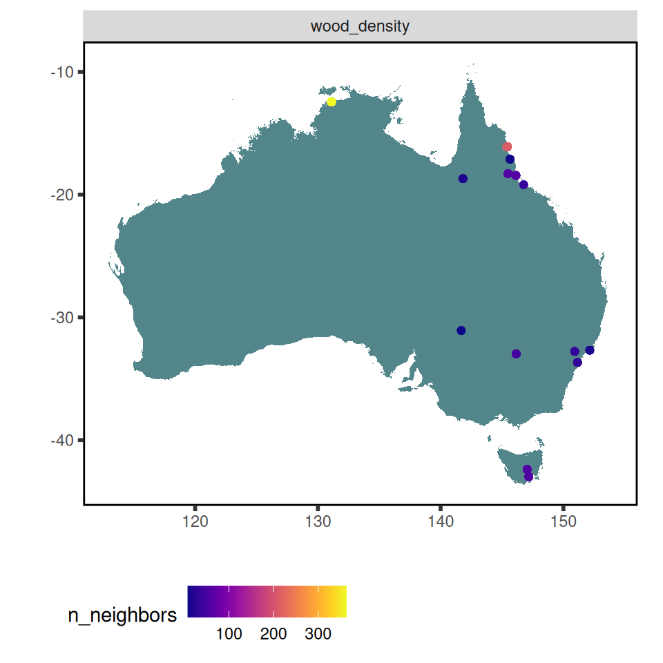
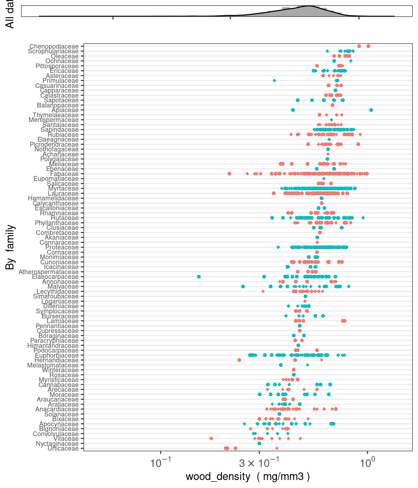
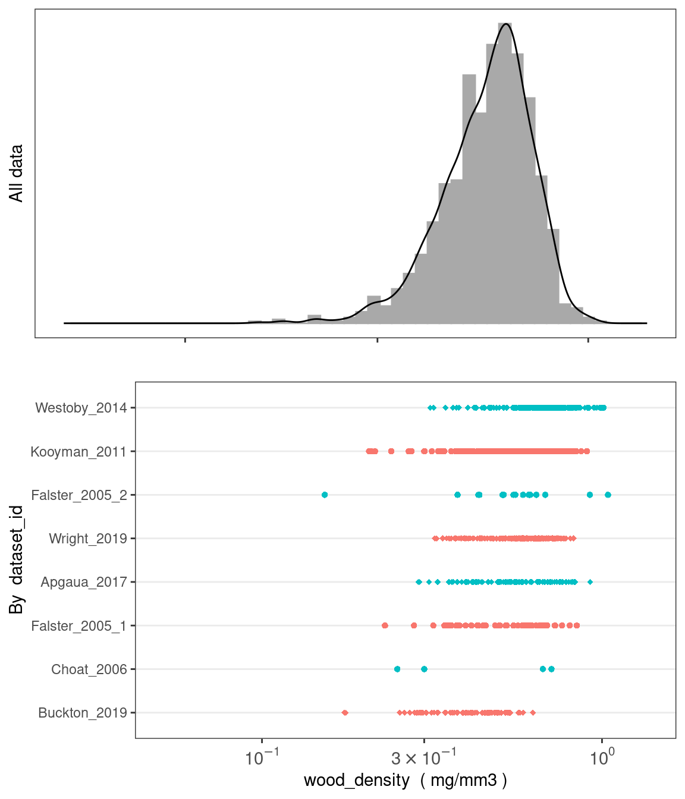

#install.packages("remotes")
#remotes::install_github("traitecoevo/austraits", dependencies = TRUE, upgrade = "ask")
## Load the austraits package
library(austraits)33 The austraits package
The austraits package was initially designed to aid users in accessing data from AusTraits, a curated plant trait database for the Australian flora. This package contains several core functions to explore, wrangle and visualise data.
In 2024 the package was generalised to support all databases built using the traits.build workflow, new functions were added, and existing functions were re-worked. The structure of AusTraits evolved from its release in 2021 until present and the version 3.0 of the austraits package only supports AusTraits versions from 5.0 onwards. If you are working with AusTraits version 4.2.0 or earlier, you need to install an old version of austraits
Below, we include a tutorial to illustrate how to use these functions.
Note the examples shown us a subset of AusTraits release 5.0.0, but the code can be run using any traits.build database.
33.1 Getting started
austraits is still under development and not yet on Cran. To install the current version from GitHub:
Loading AusTraits database
load_austraits is the one austraits function that is specific to the AusTraits database. By default, load_austraits will download AusTraits to a specified path e.g. data/austraits and will reload it from this location in the future. You can set update = TRUE so the austrait versions are downloaded fresh from Zenodo. Note that load_austraits accepts a version number or the DOI of a particular version.
If you are new to using AusTraits we recommend you download the most recent release, while you may want to download an older version to reproduce a previous analysis.
austraits <- load_austraits(version = "6.0.0", path = "data/austraits")You can check out the different versions of Austraits and their associated DOI by using:
get_versions(path = "data/austraits")The traits.build object is a very long list with various of elements. If you are not familiar with working with lists in R, we recommend having a quick look at this tutorial. To learn more about the structure of a traits.build database, check out the structure of the database.
austraits33.2 Descriptive summaries of traits and taxa
The perfect way to begin exploring a traits.build database is to learn which traits are included and how much data exists for various traits and taxa.
Interested in a specific trait? lookup_trait, lookup_location_property and lookup_context_property let you find terms based on exact and partial string matches.
lookup_trait(database = austraits, term = "leaf") %>% head()#> [1] "leaf_compoundness" "leaf_length"
#> [3] "leaf_phenology" "leaf_width"
#> [5] "leaf_delta13C" "leaf_water_use_efficiency_intrinsic"lookup_location_property(database = austraits, term = "temperature") %>% head()#> [1] "temperature, MAT (C)" "temperature, max MAT (C)"
#> [3] "temperature, min MAT (C)" "temperature, summer mean (C)"
#> [5] "temperature, winter mean (C)" "temperature, monthly max (C)"lookup_context_property(database = austraits, term = "fire") %>% head()#> [1] "fire history" "fire severity" "fire intensity" "fire season"Alternatively, have a look how much data a traits.build database has for specific traits or taxa. This function only summarises by trait_name, genus or family.
summarise_database(database = austraits, var = "trait_name") %>% head()#> # A tibble: 6 × 5
#> trait_name n_records n_dataset n_taxa percent_total
#> <chr> <int> <int> <int> <dbl>
#> 1 atmospheric_CO2_concentration 217 1 17 0.00188
#> 2 bark_C_per_dry_mass 159 1 17 0.00137
#> 3 bark_N_per_dry_mass 159 1 17 0.00137
#> 4 bark_delta13C 159 1 17 0.00137
#> 5 bark_delta15N 159 1 17 0.00137
#> 6 bark_thickness 198 2 17 0.00171summarise_database(database = austraits, var = "family") %>% head()#> # A tibble: 6 × 5
#> family n_records n_dataset n_taxa percent_total
#> <chr> <int> <int> <int> <dbl>
#> 1 Acanthaceae 177 1 14 0.00153
#> 2 Achariaceae 38 2 2 0.000328
#> 3 Actinidiaceae 13 1 1 0.000112
#> 4 Agapanthaceae 9 1 1 0.0000778
#> 5 Akaniaceae 18 2 1 0.000156
#> 6 Alismataceae 1 1 1 0.00000864summarise_database(database = austraits, var = "genus") %>% head()#> # A tibble: 6 × 5
#> genus n_records n_dataset n_taxa percent_total
#> <chr> <int> <int> <int> <dbl>
#> 1 Abroma 13 1 1 0.000112
#> 2 Abrophyllum 13 1 1 0.000112
#> 3 Abrus 9 2 1 0.0000778
#> 4 Abutilon 91 1 7 0.000786
#> 5 Acacia 4350 13 121 0.0376
#> 6 Acalypha 65 1 5 0.000562All traits.build databases include definitions for all traits. Check out the dictionary if you want to learn more about trait’s that have been output by a lookup_ or summarise_ query.
austraits$definitions %>% head()#> $accessory_cost_fraction
#> $accessory_cost_fraction$label
#> [1] "Seed accessory cost fraction"
#>
#> $accessory_cost_fraction$description
#> [1] "A reproductive shoot system [PO:0025082] biomass allocation [EnvThes:21360] trait which is one minus the ratio [PATO:0001470] of total plant seed [PO:0009010] dry [PATO:0001824] mass [PATO:0000125] to total plant reproductive shoot system tissue dry mass where reproductive tissues include all flower buds [PO:0000056], flowers [PO:0009046], fruits [PO:0009001], dispersal [EnvThes:21038] tissues, and seeds produced during the developmental process involved in reproduction [GO:0003006].;The fraction of total reproductive investment required to mature a seed that is invested in non-seed tissues. It is calculated as one minus, the ratio of total biomass investment in seeds to total biomass investment in all reproductive tissues, including flower buds, flowers, fruits, dispersal tissues, aborted seeds, and successfully matured seeds."
#>
#> $accessory_cost_fraction$type
#> [1] "numeric"
#>
#> $accessory_cost_fraction$units
#> [1] "mg/mg"
#>
#> $accessory_cost_fraction$allowed_values_min
#> [1] 0.01
#>
#> $accessory_cost_fraction$allowed_values_max
#> [1] 1
#>
#> $accessory_cost_fraction$entity_URI
#> [1] "https://w3id.org/APD/traits/trait_0012221"
#>
#>
#> $accessory_cost_mass
#> $accessory_cost_mass$label
#> [1] "Seed accessory cost mass"
#>
#> $accessory_cost_mass$description
#> [1] "A reproductive shoot system [PO:0025082] biomass allocation [EnvThes:21360] trait which is the sum of the dry [PATO:0001824] mass [PATO:0000125] of all flower buds [PO:0000056], flowers [PO:0009046], fruits [PO:0009001], aborted seeds, and dispersal [EnvThes:21038] tissues produced during the developmental process involved in reproduction [GO:0003006], but excludes mature [PATO:0001701] seed [PO:0009010] dry mass.;The mass of seed accessory costs, which is the total biomass investment in all reproductive tissues, excluding biomass invested in successfully matured seeds; it includes all biomass invested in flower buds, flowers, fruits, dispersal tissues and aborted seeds."
#>
#> $accessory_cost_mass$type
#> [1] "numeric"
#>
#> $accessory_cost_mass$units
#> [1] "mg"
#>
#> $accessory_cost_mass$allowed_values_min
#> [1] 0.01
#>
#> $accessory_cost_mass$allowed_values_max
#> [1] 10000
#>
#> $accessory_cost_mass$entity_URI
#> [1] "https://w3id.org/APD/traits/trait_0012222"
#>
#>
#> $atmospheric_CO2_concentration
#> $atmospheric_CO2_concentration$label
#> [1] "Ambient CO2 concentration (ca)"
#>
#> $atmospheric_CO2_concentration$description
#> [1] "The atmospheric carbon dioxide [ENVO:01000451] concentration [PATO:0000033].;Atmospheric CO2 concentration (external CO2 concentration); ca."
#>
#> $atmospheric_CO2_concentration$comments
#> [1] "This is not a trait itself, but will often be used to calculate traits related to photosynthetic rates and therefore is recorded."
#>
#> $atmospheric_CO2_concentration$type
#> [1] "numeric"
#>
#> $atmospheric_CO2_concentration$units
#> [1] "umol{CO2}/mol"
#>
#> $atmospheric_CO2_concentration$allowed_values_min
#> [1] 50
#>
#> $atmospheric_CO2_concentration$allowed_values_max
#> [1] 2000
#>
#> $atmospheric_CO2_concentration$entity_URI
#> [1] "https://w3id.org/APD/traits/trait_0020315"
#>
#>
#> $bark_Al_per_dry_mass
#> $bark_Al_per_dry_mass$label
#> [1] "Bark aluminium (Al) content per unit bark dry mass"
#>
#> $bark_Al_per_dry_mass$description
#> [1] "The ratio [PATO:0001470] of the mass [PATO:0000125] of aluminium [CHEBI:28984] in bark [PO:0004518] to bark dry mass."
#>
#> $bark_Al_per_dry_mass$type
#> [1] "numeric"
#>
#> $bark_Al_per_dry_mass$units
#> [1] "mg/g"
#>
#> $bark_Al_per_dry_mass$allowed_values_min
#> [1] 0.01
#>
#> $bark_Al_per_dry_mass$allowed_values_max
#> [1] 10
#>
#> $bark_Al_per_dry_mass$entity_URI
#> [1] "https://w3id.org/APD/traits/trait_0000612"
#>
#>
#> $bark_ash_per_dry_mass
#> $bark_ash_per_dry_mass$label
#> [1] "Bark ash content per unit bark dry mass"
#>
#> $bark_ash_per_dry_mass$description
#> [1] "The ratio [PATO:0001470] of the mass [PATO:0000125] of bark [PO:0004518] ash [ENVO:02000090] remaining after a combustion process [ENVO:01000839] to the bark dry mass before the combustion process."
#>
#> $bark_ash_per_dry_mass$type
#> [1] "numeric"
#>
#> $bark_ash_per_dry_mass$units
#> [1] "g/g"
#>
#> $bark_ash_per_dry_mass$allowed_values_min
#> [1] 1e-04
#>
#> $bark_ash_per_dry_mass$allowed_values_max
#> [1] 1
#>
#> $bark_ash_per_dry_mass$entity_URI
#> [1] "https://w3id.org/APD/traits/trait_0002824"
#>
#>
#> $bark_B_per_dry_mass
#> $bark_B_per_dry_mass$label
#> [1] "Bark boron (B) content per unit bark dry mass"
#>
#> $bark_B_per_dry_mass$description
#> [1] "The ratio [PATO:0001470] of the mass [PATO:0000125] of boron [CHEBI:27560] in bark [PO:0004518] to bark dry mass."
#>
#> $bark_B_per_dry_mass$type
#> [1] "numeric"
#>
#> $bark_B_per_dry_mass$units
#> [1] "mg/g"
#>
#> $bark_B_per_dry_mass$allowed_values_min
#> [1] 0.001
#>
#> $bark_B_per_dry_mass$allowed_values_max
#> [1] 1
#>
#> $bark_B_per_dry_mass$entity_URI
#> [1] "https://w3id.org/APD/traits/trait_0000614"austraits$definitions[["leaf_area"]] %>% convert_list_to_df1#> # A tibble: 8 × 2
#> key value
#> <chr> <chr>
#> 1 label Leaf area
#> 2 description A leaf area trait [TO:0000540] which is the 2-D [PATO:0001…
#> 3 comments This trait includes measurements of leaves and leaf analog…
#> 4 type numeric
#> 5 units mm2
#> 6 allowed_values_min 0.1
#> 7 allowed_values_max 1e+07
#> 8 entity_URI https://w3id.org/APD/traits/trait_001121133.3 Extracting data
In most cases, users would like to extract a subset of a traits.build database for their own research purposes.extract_dataset subsets by dataset(s), extract_traitsubsets by trait, and extract_taxa subsets by taxon_name, genus or family. In addition, the function extract_data extracts data based on a specified value(s) from any column of any table within a traits.build database.
Note that the other tables and elements of the AusTraits data are extracted too, not just the main traits table, retaining the database’s original structure. See ?extract_data and ?extract_trait for more details.
Extracting by study
Filtering one particular study and assigning it to an object
subset_data <- extract_dataset(database = austraits, dataset_id = "Falster_2005_2")
subset_data$traits %>% head()#> # A tibble: 6 × 26
#> dataset_id taxon_name observation_id trait_name value unit entity_type
#> <chr> <chr> <chr> <chr> <chr> <chr> <chr>
#> 1 Falster_2005_2 Acacia longi… 01 huber_val… 0.00… mm2{… population
#> 2 Falster_2005_2 Acacia longi… 01 huber_val… 0.00… mm2{… population
#> 3 Falster_2005_2 Acacia longi… 01 huber_val… 0.00… mm2{… population
#> 4 Falster_2005_2 Acacia longi… 01 huber_val… 0.00… mm2{… population
#> 5 Falster_2005_2 Acacia longi… 01 leaf_N_pe… 23.2 mg/g population
#> 6 Falster_2005_2 Acacia longi… 01 leaf_area 1761 mm2 population
#> # ℹ 19 more variables: value_type <chr>, basis_of_value <chr>,
#> # replicates <chr>, basis_of_record <chr>, life_stage <chr>,
#> # population_id <chr>, individual_id <chr>, repeat_measurements_id <chr>,
#> # temporal_context_id <chr>, source_id <chr>, location_id <chr>,
#> # entity_context_id <chr>, plot_context_id <chr>, treatment_context_id <chr>,
#> # collection_date <chr>, measurement_remarks <chr>, method_id <chr>,
#> # method_context_id <chr>, original_name <chr>Filtering multiple studies by two different lead authors and assigning it to an object
subset_multi_studies <- extract_dataset(database = austraits,
dataset_id = c("Thompson_2001","Ilic_2000"))
subset_multi_studies$traits %>% distinct(dataset_id)#> # A tibble: 0 × 1
#> # ℹ 1 variable: dataset_id <chr>Filtering multiple studies by same lead author (e.g. Falster) and assigning it to an object.
data_falster_studies <- extract_dataset(austraits, "Falster")
data_falster_studies$traits %>% distinct(dataset_id)#> # A tibble: 3 × 1
#> dataset_id
#> <chr>
#> 1 Falster_2003
#> 2 Falster_2005_1
#> 3 Falster_2005_2Extracting by taxonomic level
Filtering
# By family
proteaceae <- extract_taxa(austraits, family = "Proteaceae")
# Checking that only taxa in Proteaceae have been extracted
proteaceae$taxa$family %>% unique()#> [1] "Proteaceae"# By genus
acacia <- extract_taxa(austraits, genus = "Acacia")
# Checking that only taxa in Acacia have been extracted
acacia$traits$taxon_name %>% unique() %>% head()#> [1] "Acacia aneura" "Acacia dealbata" "Acacia dictyophleba"
#> [4] "Acacia hemiteles" "Acacia melanoxylon" "Acacia parramattensis"Extracting by trait
Filtering one trait and assigning it to an object
data_wood_dens <- extract_trait(austraits, "wood_density")
head(data_wood_dens$traits)#> # A tibble: 6 × 26
#> dataset_id taxon_name observation_id trait_name value unit entity_type
#> <chr> <chr> <chr> <chr> <chr> <chr> <chr>
#> 1 Apgaua_2017 Aglaia meridion… 001 wood_dens… 0.64… mg/m… individual
#> 2 Apgaua_2017 Aleurites rocki… 003 wood_dens… 0.50… mg/m… individual
#> 3 Apgaua_2017 Alphitonia petr… 005 wood_dens… 0.62… mg/m… individual
#> 4 Apgaua_2017 Alstonia schola… 007 wood_dens… 0.361 mg/m… individual
#> 5 Apgaua_2017 Amaracarpus nem… 009 wood_dens… 0.59… mg/m… individual
#> 6 Apgaua_2017 Antirhea tenuif… 013 wood_dens… 0.53… mg/m… individual
#> # ℹ 19 more variables: value_type <chr>, basis_of_value <chr>,
#> # replicates <chr>, basis_of_record <chr>, life_stage <chr>,
#> # population_id <chr>, individual_id <chr>, repeat_measurements_id <chr>,
#> # temporal_context_id <chr>, source_id <chr>, location_id <chr>,
#> # entity_context_id <chr>, plot_context_id <chr>, treatment_context_id <chr>,
#> # collection_date <chr>, measurement_remarks <chr>, method_id <chr>,
#> # method_context_id <chr>, original_name <chr>Using extract_trait to extract data for all traits with ‘leaf’ in the trait name and assigning it to an object.
data_leaf <- extract_trait(austraits, "leaf")
unique(data_leaf$traits$trait_name)#> [1] "leaf_compoundness"
#> [2] "leaf_length"
#> [3] "leaf_phenology"
#> [4] "leaf_width"
#> [5] "leaf_delta13C"
#> [6] "leaf_water_use_efficiency_intrinsic"
#> [7] "leaf_NP_ratio"
#> [8] "leaf_N_per_area"
#> [9] "leaf_N_per_dry_mass"
#> [10] "leaf_P_per_area"
#> [11] "leaf_P_per_dry_mass"
#> [12] "leaf_dark_respiration_per_area"
#> [13] "leaf_dark_respiration_per_dry_mass"
#> [14] "leaf_dry_matter_content"
#> [15] "leaf_intercellular_CO2_concentration_at_Amax"
#> [16] "leaf_intercellular_CO2_concentration_at_Asat"
#> [17] "leaf_intercellular_CO2_concentration_to_atmospheric_CO2_concentration_ratio"
#> [18] "leaf_mass_per_area"
#> [19] "leaf_photosynthetic_nitrogen_use_efficiency_saturated"
#> [20] "leaf_photosynthetic_phosphorus_use_efficiency_saturated"
#> [21] "leaf_photosynthetic_rate_per_area_maximum"
#> [22] "leaf_photosynthetic_rate_per_area_saturated"
#> [23] "leaf_photosynthetic_rate_per_dry_mass_maximum"
#> [24] "leaf_photosynthetic_rate_per_dry_mass_saturated"
#> [25] "leaf_transpiration_per_area_at_Asat"
#> [26] "leaf_water_use_efficiency_instantaneous"
#> [27] "leaf_stomatal_conductance_per_area_at_Amax"
#> [28] "leaf_stomatal_conductance_per_area_at_Asat"
#> [29] "leaf_transpiration_per_area_at_Amax"
#> [30] "leaf_dark_transpiration_per_area"
#> [31] "leaf_CN_ratio"
#> [32] "leaf_C_per_dry_mass"
#> [33] "leaf_delta15N"
#> [34] "leaf_area"
#> [35] "leaf_dry_mass"
#> [36] "leaf_fresh_mass"
#> [37] "leaf_thickness"
#> [38] "leaf_photosynthetic_rate_per_area_ambient"
#> [39] "leaf_stomatal_conductance_per_area_ambient"
#> [40] "leaf_transpiration_per_area_ambient"
#> [41] "leaf_specific_hydraulic_conductivity"
#> [42] "leaf_light_respiration_per_area"
#> [43] "leaf_photosynthesis_Jmax_per_area"
#> [44] "leaf_photosynthesis_Jmax_per_area_25C"
#> [45] "leaf_photosynthesis_Vcmax_per_area"
#> [46] "leaf_senesced_N_per_dry_mass"
#> [47] "leaf_senesced_P_per_dry_mass"
#> [48] "leaf_inclination_angle"
#> [49] "leaf_B_per_dry_mass"
#> [50] "leaf_Ca_per_dry_mass"
#> [51] "leaf_Cu_per_dry_mass"
#> [52] "leaf_Fe_per_dry_mass"
#> [53] "leaf_K_per_dry_mass"
#> [54] "leaf_Mg_per_dry_mass"
#> [55] "leaf_Mn_per_dry_mass"
#> [56] "leaf_Na_per_dry_mass"
#> [57] "leaf_S_per_dry_mass"
#> [58] "leaf_Zn_per_dry_mass"
#> [59] "leaf_lobation"
#> [60] "leaf_chlorophyll_per_area"
#> [61] "leaf_mass_to_stem_mass_ratio"
#> [62] "leaf_chlorophyll_per_dry_mass"
#> [63] "leaf_density"
#> [64] "leaf_water_content_per_dry_mass"
#> [65] "leaf_water_content_per_fresh_mass"
#> [66] "leaf_lifespan"
#> [67] "leaf_specific_hydraulic_conductance"
#> [68] "leaf_vessel_density"
#> [69] "leaf_vessel_diameter"
#> [70] "leaf_Mo_per_dry_mass"
#> [71] "leaf_Al_per_dry_mass"
#> [72] "leaf_mass_fraction"Using extract_trait to extract data for all traits with ‘leaf_N’ or ‘leaf_P’ in the trait name and assigning it to an object.
data_vector_extraction <- extract_trait(austraits, c("leaf_photosyn", "huber_value"))
unique(data_vector_extraction$traits$trait_name)#> [1] "leaf_photosynthetic_nitrogen_use_efficiency_saturated"
#> [2] "leaf_photosynthetic_phosphorus_use_efficiency_saturated"
#> [3] "leaf_photosynthetic_rate_per_area_maximum"
#> [4] "leaf_photosynthetic_rate_per_area_saturated"
#> [5] "leaf_photosynthetic_rate_per_dry_mass_maximum"
#> [6] "leaf_photosynthetic_rate_per_dry_mass_saturated"
#> [7] "huber_value"
#> [8] "leaf_photosynthetic_rate_per_area_ambient"
#> [9] "leaf_photosynthesis_Jmax_per_area"
#> [10] "leaf_photosynthesis_Jmax_per_area_25C"
#> [11] "leaf_photosynthesis_Vcmax_per_area"The function extract_data offers the flexibility of subsetting a database based on any combination of data table, column within the table, and column value.
The database tables you can subset on are: ‘traits’, ‘locations’, ‘contexts’, ‘methods’, ‘contributors’, ‘taxa’, and ‘taxonomic_updates’
observations_with_soil_data <- extract_data(
database = austraits,
table = "locations",
col = "location_property",
col_value = "soil")
# If you are unsure about column names, check with:
names(austraits$methods)#> [1] "dataset_id" "trait_name"
#> [3] "methods" "method_id"
#> [5] "description" "sampling_strategy"
#> [7] "source_primary_key" "source_primary_citation"
#> [9] "source_secondary_key" "source_secondary_citation"
#> [11] "source_original_dataset_key" "source_original_dataset_citation"
#> [13] "data_collectors" "assistants"
#> [15] "dataset_curators"Any of the extract functions can be linked together to output a more precise subset of data.
For instance, to return data on ‘leaf mass per area’ and ‘wood density’ for ‘adult’ plants of any species in the genus Acacia:
Acacias_specific_traits <- austraits %>%
extract_taxa(genus = "Acacia") %>%
extract_trait(trait_name = c("leaf_mass_per_area", "wood_density")) %>%
extract_data(table = "traits", col = "life_stage", col_value = "adult")33.4 Join data from other tables and elements
Once users have extracted the data they want, they may want to merge the study metadata stored in various relational tables into the main traits dataframe for their analyses. For example, users may require additional taxonomic information for a phylogenetic analysis, location coordinates to plot data, or context properties to understand variation in trait values for a single taxon. This is where the join_ functions come in.
There are seven join_ functions in total, each designed to append specific information from other tables and elements in the austraitsthe ancillary data tables in a traits.build object. Their suffixes refer to the type of information that is joined, e.g. join_taxonomy appends taxonomic information to the traits dataframe. Each function lets you select which data columns you wish to add and the output format.
# Join location coordinates
(data_leaf %>% join_location_coordinates)$traits %>% head()#> # A tibble: 6 × 29
#> dataset_id taxon_name observation_id trait_name value unit entity_type
#> <chr> <chr> <chr> <chr> <chr> <chr> <chr>
#> 1 ABRS_1981 Acanthocarpus ca… 0001 leaf_comp… simp… <NA> species
#> 2 ABRS_1981 Acanthocarpus ca… 0001 leaf_leng… 3 mm species
#> 3 ABRS_1981 Acanthocarpus ca… 0001 leaf_leng… 15 mm species
#> 4 ABRS_1981 Acanthocarpus hu… 0002 leaf_comp… simp… <NA> species
#> 5 ABRS_1981 Acanthocarpus hu… 0002 leaf_leng… 4 mm species
#> 6 ABRS_1981 Acanthocarpus hu… 0002 leaf_leng… 12 mm species
#> # ℹ 22 more variables: value_type <chr>, basis_of_value <chr>,
#> # replicates <chr>, basis_of_record <chr>, life_stage <chr>,
#> # population_id <chr>, individual_id <chr>, repeat_measurements_id <chr>,
#> # temporal_context_id <chr>, source_id <chr>, location_id <chr>,
#> # entity_context_id <chr>, plot_context_id <chr>, treatment_context_id <chr>,
#> # collection_date <chr>, measurement_remarks <chr>, method_id <chr>,
#> # method_context_id <chr>, original_name <chr>, location_name <chr>, …# Join location properties using defaults
(data_leaf %>% join_location_properties)$traits %>% head()#> # A tibble: 6 × 28
#> dataset_id taxon_name observation_id trait_name value unit entity_type
#> <chr> <chr> <chr> <chr> <chr> <chr> <chr>
#> 1 ABRS_1981 Acanthocarpus ca… 0001 leaf_comp… simp… <NA> species
#> 2 ABRS_1981 Acanthocarpus ca… 0001 leaf_leng… 3 mm species
#> 3 ABRS_1981 Acanthocarpus ca… 0001 leaf_leng… 15 mm species
#> 4 ABRS_1981 Acanthocarpus hu… 0002 leaf_comp… simp… <NA> species
#> 5 ABRS_1981 Acanthocarpus hu… 0002 leaf_leng… 4 mm species
#> 6 ABRS_1981 Acanthocarpus hu… 0002 leaf_leng… 12 mm species
#> # ℹ 21 more variables: value_type <chr>, basis_of_value <chr>,
#> # replicates <chr>, basis_of_record <chr>, life_stage <chr>,
#> # population_id <chr>, individual_id <chr>, repeat_measurements_id <chr>,
#> # temporal_context_id <chr>, source_id <chr>, location_id <chr>,
#> # entity_context_id <chr>, plot_context_id <chr>, treatment_context_id <chr>,
#> # collection_date <chr>, measurement_remarks <chr>, method_id <chr>,
#> # method_context_id <chr>, original_name <chr>, location_name <chr>, …# Join location properties, with each location property pertaining to soil added as a separate column.
temperature_properties <- lookup_location_property(data_leaf, "temperature")
(data_leaf %>% join_location_properties(format = "many_columns", vars = temperature_properties))$traits %>% head()#> # A tibble: 6 × 32
#> dataset_id taxon_name observation_id trait_name value unit entity_type
#> <chr> <chr> <chr> <chr> <chr> <chr> <chr>
#> 1 ABRS_1981 Acanthocarpus ca… 0001 leaf_comp… simp… <NA> species
#> 2 ABRS_1981 Acanthocarpus ca… 0001 leaf_leng… 3 mm species
#> 3 ABRS_1981 Acanthocarpus ca… 0001 leaf_leng… 15 mm species
#> 4 ABRS_1981 Acanthocarpus hu… 0002 leaf_comp… simp… <NA> species
#> 5 ABRS_1981 Acanthocarpus hu… 0002 leaf_leng… 4 mm species
#> 6 ABRS_1981 Acanthocarpus hu… 0002 leaf_leng… 12 mm species
#> # ℹ 25 more variables: value_type <chr>, basis_of_value <chr>,
#> # replicates <chr>, basis_of_record <chr>, life_stage <chr>,
#> # population_id <chr>, individual_id <chr>, repeat_measurements_id <chr>,
#> # temporal_context_id <chr>, source_id <chr>, location_id <chr>,
#> # entity_context_id <chr>, plot_context_id <chr>, treatment_context_id <chr>,
#> # collection_date <chr>, measurement_remarks <chr>, method_id <chr>,
#> # method_context_id <chr>, original_name <chr>, location_name <chr>, …# Join context properties using defaults
(data_leaf %>% join_context_properties)$traits %>% head()#> # A tibble: 6 × 31
#> dataset_id taxon_name observation_id trait_name value unit entity_type
#> <chr> <chr> <chr> <chr> <chr> <chr> <chr>
#> 1 ABRS_1981 Acanthocarpus ca… 0001 leaf_comp… simp… <NA> species
#> 2 ABRS_1981 Acanthocarpus ca… 0001 leaf_leng… 3 mm species
#> 3 ABRS_1981 Acanthocarpus ca… 0001 leaf_leng… 15 mm species
#> 4 ABRS_1981 Acanthocarpus hu… 0002 leaf_comp… simp… <NA> species
#> 5 ABRS_1981 Acanthocarpus hu… 0002 leaf_leng… 4 mm species
#> 6 ABRS_1981 Acanthocarpus hu… 0002 leaf_leng… 12 mm species
#> # ℹ 24 more variables: value_type <chr>, basis_of_value <chr>,
#> # replicates <chr>, basis_of_record <chr>, life_stage <chr>,
#> # population_id <chr>, individual_id <chr>, repeat_measurements_id <chr>,
#> # temporal_context_id <chr>, source_id <chr>, location_id <chr>,
#> # entity_context_id <chr>, plot_context_id <chr>, treatment_context_id <chr>,
#> # collection_date <chr>, measurement_remarks <chr>, method_id <chr>,
#> # method_context_id <chr>, original_name <chr>, …# Join context properties, with each context property pertaining to fire added as a separate column.
fire_properties <- lookup_context_property(data_leaf, "fire")
(austraits %>% join_context_properties(format = "many_columns", vars = fire_properties, include_description = TRUE))$traits %>% head()#> # A tibble: 6 × 27
#> dataset_id taxon_name observation_id trait_name value unit entity_type
#> <chr> <chr> <chr> <chr> <chr> <chr> <chr>
#> 1 ABRS_1981 Acanthocarpus ca… 0001 leaf_comp… simp… <NA> species
#> 2 ABRS_1981 Acanthocarpus ca… 0001 leaf_leng… 3 mm species
#> 3 ABRS_1981 Acanthocarpus ca… 0001 leaf_leng… 15 mm species
#> 4 ABRS_1981 Acanthocarpus ca… 0001 seed_heig… 3 mm species
#> 5 ABRS_1981 Acanthocarpus ca… 0001 seed_leng… 3 mm species
#> 6 ABRS_1981 Acanthocarpus ca… 0001 seed_width 3 mm species
#> # ℹ 20 more variables: value_type <chr>, basis_of_value <chr>,
#> # replicates <chr>, basis_of_record <chr>, life_stage <chr>,
#> # population_id <chr>, individual_id <chr>, repeat_measurements_id <chr>,
#> # temporal_context_id <chr>, source_id <chr>, location_id <chr>,
#> # entity_context_id <chr>, plot_context_id <chr>, treatment_context_id <chr>,
#> # collection_date <chr>, measurement_remarks <chr>, method_id <chr>,
#> # method_context_id <chr>, original_name <chr>, …# Join methodological information using defaults
(data_leaf %>% join_methods)$traits %>% head()#> # A tibble: 6 × 27
#> dataset_id taxon_name observation_id trait_name value unit entity_type
#> <chr> <chr> <chr> <chr> <chr> <chr> <chr>
#> 1 ABRS_1981 Acanthocarpus ca… 0001 leaf_comp… simp… <NA> species
#> 2 ABRS_1981 Acanthocarpus ca… 0001 leaf_leng… 3 mm species
#> 3 ABRS_1981 Acanthocarpus ca… 0001 leaf_leng… 15 mm species
#> 4 ABRS_1981 Acanthocarpus hu… 0002 leaf_comp… simp… <NA> species
#> 5 ABRS_1981 Acanthocarpus hu… 0002 leaf_leng… 4 mm species
#> 6 ABRS_1981 Acanthocarpus hu… 0002 leaf_leng… 12 mm species
#> # ℹ 20 more variables: value_type <chr>, basis_of_value <chr>,
#> # replicates <chr>, basis_of_record <chr>, life_stage <chr>,
#> # population_id <chr>, individual_id <chr>, repeat_measurements_id <chr>,
#> # temporal_context_id <chr>, source_id <chr>, location_id <chr>,
#> # entity_context_id <chr>, plot_context_id <chr>, treatment_context_id <chr>,
#> # collection_date <chr>, measurement_remarks <chr>, method_id <chr>,
#> # method_context_id <chr>, original_name <chr>, methods <chr># Join taxonomic information using defaults
(data_leaf %>% join_taxa)$traits %>% head()#> # A tibble: 6 × 30
#> dataset_id taxon_name observation_id trait_name value unit entity_type
#> <chr> <chr> <chr> <chr> <chr> <chr> <chr>
#> 1 ABRS_1981 Acanthocarpus ca… 0001 leaf_comp… simp… <NA> species
#> 2 ABRS_1981 Acanthocarpus ca… 0001 leaf_leng… 3 mm species
#> 3 ABRS_1981 Acanthocarpus ca… 0001 leaf_leng… 15 mm species
#> 4 ABRS_1981 Acanthocarpus hu… 0002 leaf_comp… simp… <NA> species
#> 5 ABRS_1981 Acanthocarpus hu… 0002 leaf_leng… 4 mm species
#> 6 ABRS_1981 Acanthocarpus hu… 0002 leaf_leng… 12 mm species
#> # ℹ 23 more variables: value_type <chr>, basis_of_value <chr>,
#> # replicates <chr>, basis_of_record <chr>, life_stage <chr>,
#> # population_id <chr>, individual_id <chr>, repeat_measurements_id <chr>,
#> # temporal_context_id <chr>, source_id <chr>, location_id <chr>,
#> # entity_context_id <chr>, plot_context_id <chr>, treatment_context_id <chr>,
#> # collection_date <chr>, measurement_remarks <chr>, method_id <chr>,
#> # method_context_id <chr>, original_name <chr>, family <chr>, genus <chr>, …# Join taxonomic updates information using defaults
(data_leaf %>% join_taxonomic_updates)$traits %>% head()#> # A tibble: 6 × 27
#> dataset_id taxon_name observation_id trait_name value unit entity_type
#> <chr> <chr> <chr> <chr> <chr> <chr> <chr>
#> 1 ABRS_1981 Acanthocarpus ca… 0001 leaf_comp… simp… <NA> species
#> 2 ABRS_1981 Acanthocarpus ca… 0001 leaf_leng… 3 mm species
#> 3 ABRS_1981 Acanthocarpus ca… 0001 leaf_leng… 15 mm species
#> 4 ABRS_1981 Acanthocarpus hu… 0002 leaf_comp… simp… <NA> species
#> 5 ABRS_1981 Acanthocarpus hu… 0002 leaf_leng… 4 mm species
#> 6 ABRS_1981 Acanthocarpus hu… 0002 leaf_leng… 12 mm species
#> # ℹ 20 more variables: value_type <chr>, basis_of_value <chr>,
#> # replicates <chr>, basis_of_record <chr>, life_stage <chr>,
#> # population_id <chr>, individual_id <chr>, repeat_measurements_id <chr>,
#> # temporal_context_id <chr>, source_id <chr>, location_id <chr>,
#> # entity_context_id <chr>, plot_context_id <chr>, treatment_context_id <chr>,
#> # collection_date <chr>, measurement_remarks <chr>, method_id <chr>,
#> # method_context_id <chr>, original_name <chr>, aligned_name <chr># Join contributors information using defaults
(data_leaf %>% join_contributors)$traits %>% head()#> # A tibble: 6 × 27
#> dataset_id taxon_name observation_id trait_name value unit entity_type
#> <chr> <chr> <chr> <chr> <chr> <chr> <chr>
#> 1 ABRS_1981 Acanthocarpus ca… 0001 leaf_comp… simp… <NA> species
#> 2 ABRS_1981 Acanthocarpus ca… 0001 leaf_leng… 3 mm species
#> 3 ABRS_1981 Acanthocarpus ca… 0001 leaf_leng… 15 mm species
#> 4 ABRS_1981 Acanthocarpus hu… 0002 leaf_comp… simp… <NA> species
#> 5 ABRS_1981 Acanthocarpus hu… 0002 leaf_leng… 4 mm species
#> 6 ABRS_1981 Acanthocarpus hu… 0002 leaf_leng… 12 mm species
#> # ℹ 20 more variables: value_type <chr>, basis_of_value <chr>,
#> # replicates <chr>, basis_of_record <chr>, life_stage <chr>,
#> # population_id <chr>, individual_id <chr>, repeat_measurements_id <chr>,
#> # temporal_context_id <chr>, source_id <chr>, location_id <chr>,
#> # entity_context_id <chr>, plot_context_id <chr>, treatment_context_id <chr>,
#> # collection_date <chr>, measurement_remarks <chr>, method_id <chr>,
#> # method_context_id <chr>, original_name <chr>, data_contributors <chr>All data tables can be merged with flatten_database, which calls each of the join_ functions.
# Flatten database using defaults
all_joined <- data_leaf %>% flatten_database()
# Flatten database also accepts a list of vectors to specify which columns to include for each table
data_leaf %>% flatten_database(
format = "single_column_json",
vars = list(
location = "all",
context = "all",
contributors = "all",
taxonomy = c("family"),
taxonomic_updates = c("aligned_name"),
methods = c("methods"))
)#> # A tibble: 70,471 × 39
#> dataset_id taxon_name observation_id trait_name value unit entity_type
#> <chr> <chr> <chr> <chr> <chr> <chr> <chr>
#> 1 ABRS_1981 Acanthocarpus c… 0001 leaf_comp… simp… <NA> species
#> 2 ABRS_1981 Acanthocarpus c… 0001 leaf_leng… 3 mm species
#> 3 ABRS_1981 Acanthocarpus c… 0001 leaf_leng… 15 mm species
#> 4 ABRS_1981 Acanthocarpus h… 0002 leaf_comp… simp… <NA> species
#> 5 ABRS_1981 Acanthocarpus h… 0002 leaf_leng… 4 mm species
#> 6 ABRS_1981 Acanthocarpus h… 0002 leaf_leng… 12 mm species
#> 7 ABRS_1981 Acanthocarpus p… 0003 leaf_comp… simp… <NA> species
#> 8 ABRS_1981 Acanthocarpus p… 0003 leaf_leng… 3 mm species
#> 9 ABRS_1981 Acanthocarpus p… 0004 leaf_comp… simp… <NA> species
#> 10 ABRS_1981 Acanthocarpus p… 0004 leaf_leng… 20 mm species
#> # ℹ 70,461 more rows
#> # ℹ 32 more variables: value_type <chr>, basis_of_value <chr>,
#> # replicates <chr>, basis_of_record <chr>, life_stage <chr>,
#> # population_id <chr>, individual_id <chr>, repeat_measurements_id <chr>,
#> # temporal_context_id <chr>, source_id <chr>, location_id <chr>,
#> # entity_context_id <chr>, plot_context_id <chr>, treatment_context_id <chr>,
#> # collection_date <chr>, measurement_remarks <chr>, method_id <chr>, …33.5 Binding extracted databases
The function bind_databases allows you to bind together two subsetted databases you have created by filtering (extract_ functions) based on two critera.
extracted_wood <- austraits %>% extract_trait("wood_density")
extracted_Rutaceae <- austraits %>% extract_taxa(family = "Rutaceae")
merged <- bind_databases(extracted_wood, extracted_Rutaceae)33.6 Visualising data by site
plot_locations graphically summarises where trait data were collected and how much data is available. The legend refers to the number of neighbouring points: the warmer the colour, the more data that are available for a particular location. This function only includes data that are geo-referenced. Users must first use join_location_coordinates to append latitude and longitude information into the trait dataframe before plotting
data_wood_dens <- data_wood_dens %>% join_location_coordinates()
plot_locations(data_wood_dens$traits)
33.7 Visualising data distribution and variance
plot_trait_distribution_beeswarm creates histograms and beeswarm plots for continuous traits to help users visualise the data. Users can specify whether to create separate beeswarm plots based on any column in the traits table (e.g. dataset_id or life_stage) or at the level of genus or family.
austraits %>% plot_trait_distribution_beeswarm("wood_density", "family")
austraits %>% plot_trait_distribution_beeswarm("wood_density", "dataset_id")
33.8 Pivotting from long to wide format
The table of traits in AusTraits comes in long format, where data for all trait information are denoted by two columns called trait_name and value. You can convert this to wide format, where each trait is in a separate column, using the function trait_pivot_wider. Note, that the informtion in the columns unit, replicates, measurement_remarks, and basis_of_value is lost when this function pivots.
data_wide_bound <- data_falster_studies %>% # Joining multiple obs with `--`
trait_pivot_wider()If there are multiple measurements linked to the same observation_id, such as when both a minimum and maximum are recorded, this information is retained as separate rows when using trait_pivot_wider. Instead, you can use bind_trait_values first, which merges multiple entries for value, value_type, basis_of_value, and replicates into a single row, with values delimited by “–”.
bound_values <- (austraits %>% extract_dataset("ABRS_1981"))$traits %>%
bind_trait_values()
bounded_wider <- bound_values %>% trait_pivot_widerIf you would like to revert the bounded trait values, you have to use separate_trait_values. Note, this function does not always recreate the original table as the delimitor “–” is also used for value_type bin and range, which should not necessarily be split. This function is on the list to rework for future austraits versions.
bound_values2 <- (austraits %>%
extract_dataset("ABRS_1981") %>%
extract_data(table = "traits", col = "value_type", col_value = c("minimum", "maximum"))
)$traits %>%
bind_trait_values()
bound_values2 %>%
separate_trait_values(., austraits$definitions)#> # A tibble: 2,587 × 26
#> dataset_id taxon_name observation_id trait_name value unit entity_type
#> <chr> <chr> <chr> <chr> <chr> <chr> <chr>
#> 1 ABRS_1981 Acanthocarpus c… 0001 leaf_leng… 15 mm species
#> 2 ABRS_1981 Acanthocarpus c… 0001 leaf_leng… 3 mm species
#> 3 ABRS_1981 Acanthocarpus c… 0001 seed_heig… 3 mm species
#> 4 ABRS_1981 Acanthocarpus c… 0001 seed_leng… 3 mm species
#> 5 ABRS_1981 Acanthocarpus c… 0001 seed_width 3 mm species
#> 6 ABRS_1981 Acanthocarpus h… 0002 seed_leng… 4 mm species
#> 7 ABRS_1981 Acanthocarpus p… 0003 leaf_leng… 3 mm species
#> 8 ABRS_1981 Acanthocarpus r… 0006 seed_heig… 2.5 mm species
#> 9 ABRS_1981 Acanthocarpus r… 0006 seed_leng… 2.5 mm species
#> 10 ABRS_1981 Acanthocarpus r… 0006 seed_width 2.5 mm species
#> # ℹ 2,577 more rows
#> # ℹ 19 more variables: value_type <chr>, basis_of_value <chr>,
#> # replicates <chr>, basis_of_record <chr>, life_stage <chr>,
#> # population_id <chr>, individual_id <chr>, repeat_measurements_id <chr>,
#> # temporal_context_id <chr>, source_id <chr>, location_id <chr>,
#> # entity_context_id <chr>, plot_context_id <chr>, treatment_context_id <chr>,
#> # collection_date <chr>, measurement_remarks <chr>, method_id <chr>, …